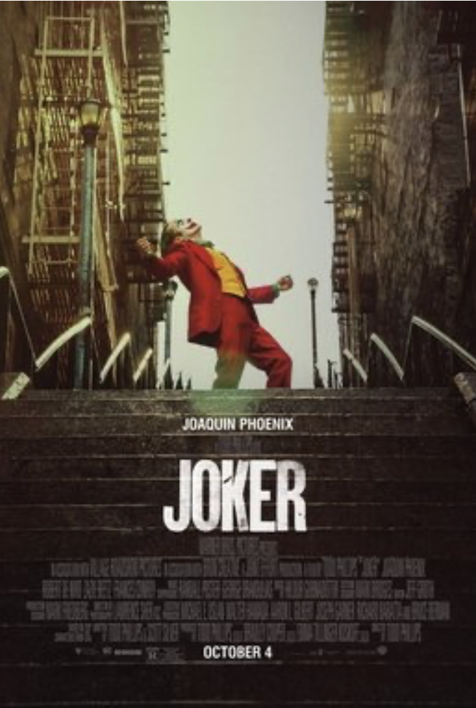

Poster of the film, all rights reserved to Warner Bros. and the artist
I was a little apprehensive about seeing the film. The Joker being a character easily relegated to the cliche. A man morally crushed by the profound hypocrisy of modern life, turns (the ironic turn) against it, and blows it all up, laughing (laughing in itself as reversal of the natural order of things).
And the film disappoints a little on that front. Its hour-length backstory of how and why the Joker, becomes the Joker, is a little too direct, a little too long and a little too easy (parental deprivation, childhood trauma, extreme anxiety,...etc). The gratuitous handling of mental illness, just as obscene and ridiculous as gratuitous nudity, doesn't help either.
But then, the film, soars, with the extraordinary soundtrack of Hildur Guðnadóttir and Lawrence Sher's, grainy and moody cinematography, it goes where no Hollywood film would dare to go. The film is perhaps the most biting criticism of capitalism I have ever seen in a mainstream Hollywood movie. It spares no one.
Its not just about how unforgiving New York is as a city (capitalism on steroids), but how dehumanising capitalism is. The Joker need not to have been a mental patient to "renounce" the system and its hypocrisy. The Joker could be any person who is constantly pressured to give his labour with joy 'while putting a big smile on his face', while watching the world go to the shits. Here is where the film triumphs, the struggles of the Joker, the dismantling of the welfare state, the obscene income inequality, the decimation of the middle class under neoliberalism, the absence of any sense of 'civility' or a sense of the 'civic', and replacing that sense with hyper-surveillance and hyper-securitization of the public sphere-- all of this would have driven anyone to the limits of their understanding and the limits of their conformity with that system.
The system, which has transformed the miseries of millions as nothing more than unfortunate spectacle, can only understand the logic of the spectacle (for once the post-structuralist were right about something!). And the Joker glories in the spectacle, in being seen, for once.
I am not surprised that some critics were "scared" the film would give rise to "violent" actions, because it totally should. Those same critics are completely at peace with the millions facing the violence of deprivation, poverty and austerity and would not lose a night sleep over it, and yet somehow would be "deeply disturbed" if the impoverished multitudes resisted or tried to resist.
The Joker realises that his own involuntary, inappropriate laugh (masterfully captured by Joaquin Phoenix, whose performance is a master study in the balance between restraint and excess), is nothing more than the cynical reflex to the paradoxes of capitalism.
There is also a special joy in killing older men (I have a soft spot for patricide) because as usual, they are the keepers and guardians of systems that oppress, undermine, disposes almost everyone.
The film tried to balance the logic of extreme cognitive dissonance that we live in, sometimes not very gracefully (we still have a while to go in understanding and depicting mental illness), but not without a keen and astonishing sense of the political. And that, in this current moment, cannot be overstated.